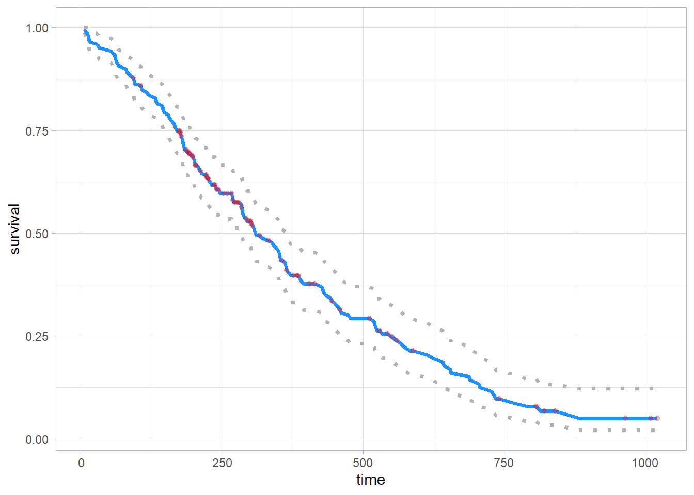
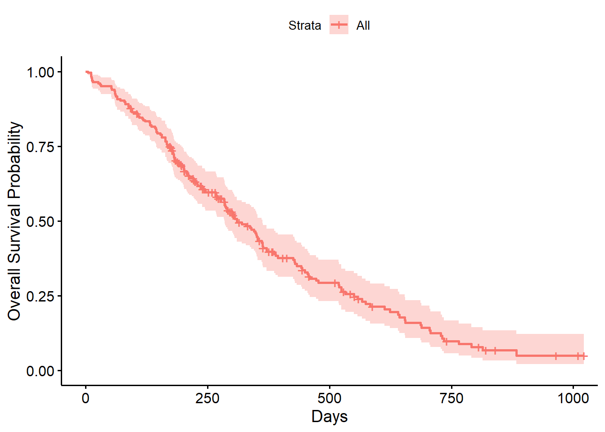

# kaplan-meier method
f1 <- survfit(Surv(time, status) ~ 1, data = lung)
f1_tibble <- tibble(n = f1$n,
time = f1$time,
n_risk = f1$n.risk,
n_event = f1$n.event,
n_censor = f1$n.censor,
surv = f1$surv,
se = f1$std.err,
cum_hazard = f1$cumhaz,
stan_c_hazard = f1$std.chaz,
lower_ci = f1$lower,
upper_ci = f1$upper) |>
janitor::clean_names()
f1_tibble |>
mutate(
across(
everything(),
~round(.x, 2)
)
) |>
reactable::reactable()Untitled
f1_tibble |>
pivot_longer(c(surv, lower_ci, upper_ci),
names_to = 'term',
values_to = 'survival') |>
ggplot(aes(x = time, y = survival)) +
geom_line(aes(color = term, linetype = term), linewidth = 1.25) +
geom_point(
data = f1_tibble |>
pivot_longer(c(surv, lower_ci, upper_ci),
names_to = 'term',
values_to = 'survival') |>
filter(term == 'surv' & n_censor != 0),
color = 'red',
alpha = .3) +
scale_color_manual(values = c('gray70', 'dodgerblue', 'gray70')) +
scale_linetype_manual(values = c(3, 1, 3)) +
theme_light() +
theme(legend.position = 'none')
ggsurvplot(fit = survfit(Surv(time, status) ~ 1, data = lung),
xlab = 'Days',
ylab = 'Overall Survival Probability')
f1_summary <- summary(f1, times = 365)
f1_summaryCall: survfit(formula = Surv(time, status) ~ 1, data = lung)
time n.risk n.event survival std.err lower 95% CI upper 95% CI
365 65 121 0.409 0.0358 0.345 0.486# 1 year probability of survival in the study is 41% (survival rate)
sur_diff <- survdiff(Surv(time, status) ~ sex, data = lung)
sur_diffCall:
survdiff(formula = Surv(time, status) ~ sex, data = lung)
N Observed Expected (O-E)^2/E (O-E)^2/V
sex=1 138 112 91.6 4.55 10.3
sex=2 90 53 73.4 5.68 10.3
Chisq= 10.3 on 1 degrees of freedom, p= 0.001 survival_p <- function(object){
answer <- 1 - stats::pchisq(object$chisq, length(object$n) - 1)
round(answer, 3)
}
survival_p(sur_diff)[1] 0.001ecog_diff <- survdiff(Surv(time, status) ~ ph.ecog, data = lung)
survival_p(ecog_diff)[1] 0# cox regression
cox_find <- coxph(Surv(time, status) ~ sex, data = lung)
cox_find Call:
coxph(formula = Surv(time, status) ~ sex, data = lung)
coef exp(coef) se(coef) z p
sex -0.5310 0.5880 0.1672 -3.176 0.00149
Likelihood ratio test=10.63 on 1 df, p=0.001111
n= 228, number of events= 165